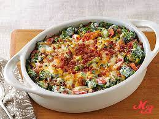

Bacon and Brocolli Recipe

Description
I like Bacon, I like Brocolli, I like cheese.
Put them together for heaven. Is it good enough?
Ingredients
- 8 oz chopped bacon
- 2 tbsp butter
- 1 diced onion
- 5 cloves chopped garlic
- 1 1/2 cups light cream
- 1 1/2 tsps cornstarch mixed with 1 TBSP water
- 1 lb brocolli florets - stems removed
- 1/2 cup shredded mozerella or grated
- 1/3 cup parm
Steps
- Preheat broiler
- Fry Bacon
- Drain most of bacon fat, in same pan, melt butter, sautee onion and add brocolli
stirring occasionally and adding salt and pepper for around 3 mins or when color forms
- Add garlic and stir through for 30 secs. pour in cream, reduce heat to low and simmer
for 3 to 4 mins while stirring occasionally. or until sauce thickens. if sauce is too thin,
add cornstarch slurry.
- Add bacon and mix everything. Top with cheeses and broil until everything seems done (2-3 mins)
- Season and garnish and its good to go